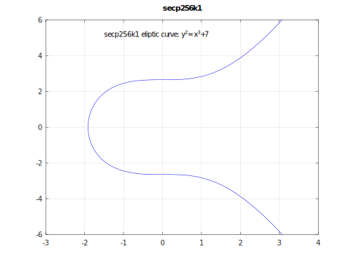
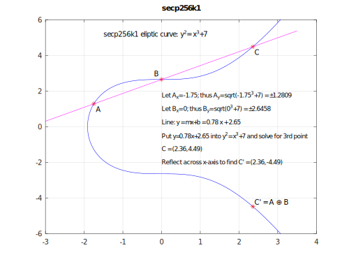
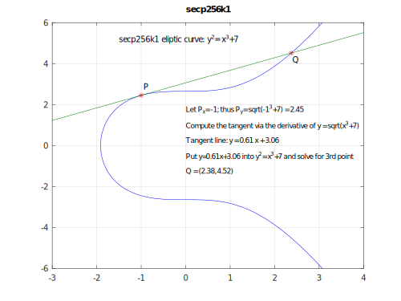
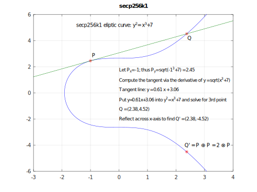
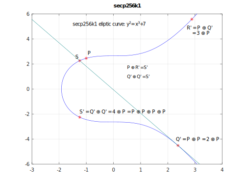
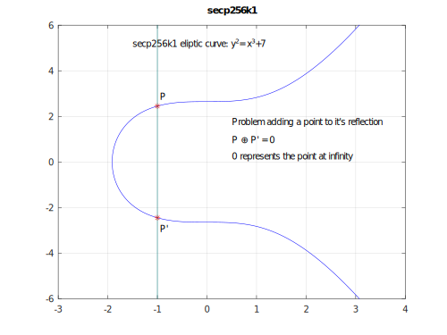

# CS 4501 ### Cryptocurrency <p class='titlep'> </p> <div class="titlesmall"><p> <a href="http://www.cs.virginia.edu/~asb">Aaron Bloomfield</a> (aaron@virginia.edu)<br> <a href="http://github.com/aaronbloomfield/ccc">@github</a> | <a href="index.html">↑</a> | <a href="./03-numbers.html?print-pdf"><img class="print" width="20" src="../slides/images/print-icon.png" style="top:0px;vertical-align:middle;padding:0;border-radius:0"></a> </p></div> <p class='titlep'> </p> ## zk-SNARKs
# Contents [Privacy Concerns](#/privacy) [Zero-Knowledge Proofs](#/zkproofs) [zk-SNARKs Introduction](#/zksnarks) [Arithmetic Circuits](#/circuits) [Elliptic Curves](#/elliptic) [Non-Interactiveness](#/noninteractive) [Zcash](#/zcash) [Firo (aka Zcoin)](#/firo)
# Privacy Concerns
## Transaction Tracing - Transactions on networks such as Ethereum and Bitcoin can be traced - All you need to trace a transaction is to track coins through (what may be multiple) wallets to determine where the coins originated - If the coins were purchased through an exchange, that exchange will have the personal information of the wallet that exchanged/purchased the coins - Scammers or hackers will bounce the funds through many wallets so that it is harder to trace funds, but it is not impossible ## 2020 Twitter Hack ## 2020 Twitter Hack - In 2020, a scammer used a phishing attack to access 130 famous Twitter accounts and asked for Bitcoin donations with the promise of doubling any money sent ([ref](https://www.wired.com/story/how-alleged-twitter-hackers-got-caught-bitcoin/)) - They were able to get about `$`180,000 worth of Bitcoin - Investigators were able to find the perpetrators by tracing the Bitcoin transactions back to Coinbase accounts ## Solutions - In traditional financial systems, payment privacy is enforced by trusted third parties such as banks - However, this system is still vulnerable to [data breaches](https://www.upguard.com/blog/biggest-data-breaches-financial-services) - If a company is paying its employees with cryptocurrencies, they want employee information, payment amounts, and company information to be private - For a cryptocurrency to be completely private and encrypted, transactions must be fully verifiable with zero knowledge of what the transaction actually holds
# Zero Knowledge Proofs
## Zero Knowledge - If a prover knows some secret *S*... - Such as a private key... - How can this prover prove to a verifier that they know *S* without showing the verifier what S is?
<!-- .slide: class="right-float-img" --> ## Example: The Ali Baba cave  - A circular cave has a locked door - Peggy (the "prover") knows how to open it, and wants to prove it to Victor (the "verifier") - But she doesn't want Victor to see how to open it - How can she prove this to him? - And not show it to the rest of the world? - (Images from [Wikipedia](https://en.wikipedia.org/wiki/Zero-knowledge_proof)) <!-- .slide: class="right-float-img" --> ## Example: The Ali Baba cave  - Victor waits outside, and Peggy randomly chooses path A or B <!-- .slide: class="right-float-img" --> ## Example: The Ali Baba cave  - Victor waits outside, and Peggy randomly chooses path A or B - Victor enters the cave, and states which path he wants Peggy to exit <!-- .slide: class="right-float-img" --> ## Example: The Ali Baba cave  - Victor waits outside, and Peggy randomly chooses path A or B - Victor enters the cave, and states which path he wants Peggy to exit - Peggy either: - Went down that path, and doesn't have to open the door - Went down the other path, and does have to open the door - Each with 50% probability
## Results - This shows, with 50% probability, that Alice knows a "key" - If run twice, then it shows with 75% probability - To get a higher confidence level, run it many times - 10? 100? 1000? - This is not a proof! - Since there is a $\frac{1}{2^n}$ chance that Peggy was just really lucky - We'll call it a *verification* - Note that this is an *interactive* verification ## But wait... - Why doesn't Victor check that the door is locked, and then have Peggy do a loop? - Recall that Peggy wants to prove to Victor that she knows the key - But not show it to the rest of the world - The current experiment: - Does convince Victor (with probability $1/2^n$ for $n$ tries) - Will look staged to the rest of the world - Peggy doing a loop: - Will still convince Victor - Will reveal that Peggy knows the key to the rest of the world <!-- .slide: class="right-float-img" --> ## Where's Waldo  - A series of illustrations in books by martin Handford - Each image is very busy, and one has to find Waldo - If I know where Waldo is, I can prove it by showing you - But how do I prove it without showing you his position? - (Images from [Wikipedia](https://en.wikipedia.org/wiki/Where%27s_Wally%3F)) ## Where's Waldo - Let's do an example! - This *is* a proof, since I can definitively show where Waldo is - There could be *multiple* Waldos, but I have still showed where one is - This is still an *interactive* proof - Although I could leave it lying around, and it would be (mostly) non-interactive - Note who I verified it to, though... ## Qualities of a Zero-Knowledge Proof - *Completeness:* the verifier can be (almost) certain that the prover "knows" the information - After $n=100$ iterations, Peggy knows how to work the lock - I definitively know where Waldo is - *Soundness:* the prover cannot "prove" false information to the verifier - After $n=100$, Peggy cannot (realistically) have faked it - I cannot have shared a false location of Waldo - *Zero-Knowledge:* The information being proven by the prover is never shared to the verifier - Victor does not know how to work the lock - You do not find out where Waldo is ## Interactive ZK proofs - The prover and verifier must interact for the verifier to be certain that the prover knows the secret - In the cave example, it required many iterations to verify - In the Where's Waldo example, the prover must show the verifier the hole cut out around Waldo to prove their knowledge ## Non-Interactive ZK proofs - The prover can provide a verified account of their proof without having to interact with a verifier - The verifier in this case can be a random oracle which generate values to test the proof - This requires some form of a trusted random generation algorithm, often implemented by a cryptocurrency organization - This means the majority of the work must be implemented by the prover and the verification step is easy for other nodes on the network
# zk-SNARKs Introduction
## zk-SNARKs - zk-SNARK = **Z**ero **K**nowledge **S**uccinct **N**on-Interactive **AR**gument of **K**nowledge - **Zero knowledge** so that transaction information is hidden from other nodes and tracing is thus not possible - **Succinct** so that verifying transactions using this method does not take (substantially) longer than other blockchains - And the data transmitted is small - **Non-Interactive** so that other nodes do not need to be active while proof is being generated - Also limits computation power/time for other nodes ## Goals - Alice needs to *show* to Bob that she knows some secret piece of information - Beyond the qualities of completeness, soundness, and zero-knowledge... - We have two goals: - Blindness: Alice and Bob will not learn any information from each other - Verifiability: Alice is properly showing this, and not returning fake values, is essentially zero - The combination of these two implies that Alice has to select her information ahead of time without knowing Bob's information - We will refine these shortly... ## Overview - We want to show that we can evaluate polynomials in a zero-knowledge way - If Alice has a polynomial $P$ and Bob has a value $x$, then Bob can receive $P(x)$ without Alice knowing $x$ and without Bob knowing $P$ - Given that, we take some arbitrary computation and encode it as a polynomial - Through something called an *arithmetic circuit* - This computation could be something that the only (known) solution is a private key - Then we define the protocol for this type of proof ## Sources - The explanation in this slide set follows that of [Zcash](https://z.cash/) - Specifically their [How It Works](https://z.cash/technology/) page - And also their "Explaining SNARKs" (parts [1](https://electriccoin.co/blog/snark-explain1/) through [7](https://electriccoin.co/blog/snark-explain7/)) - <img src="images/logos/zcash.svg" class="cclogo"> [ZEC](https://coinmarketcap.com/currencies/zcash/), aka Zcash, current sells for `$`165 per coin (as of April 10, 2022)<br clear='all'> - Another coin that uses zkSNARKs is: - <img src="images/logos/Firo-logo.svg" class="cclogo"> [FIRO](https://coinmarketcap.com/currencies/firo/), aka Firo aka Zcoin, current sells for `$`3.86 per coin (as of April 10, 2022)<br clear='all'> <!-- from part 1: https://electriccoin.co/blog/snark-explain/ --> ## Homomorphic Hidings - A *homomorphic* operation $T$ transforms set A into set B while preserving (some) operations on the elements of the set - If $a_1,a_2 \in A$ and $T(a_1),T(a_2) \in B$, and if $a_1 \oplus a_2 = x$, then $T(a_1) \oplus T(a_2) = T(x)$ - A *Homomorphic Hiding* is an encryption scheme $E(x)$ that has the following properties: - Given $E(x)$, it is hard to find $x$ - $E(x) \ne E(y)$ if $x \ne y$ - Given $E(x)$ and $E(y)$, is it possible to compute $E(x+y)$ and other linear combinations without knowing $x$ and $y$ ## Homomorphic Hidings - Alice knows $x$ and $y$, and wants to prove to Bob that $x+y=z$ - Consider the finite group $Z_p$ for some prime $p$ - We define $E(x)=g^x$ for a known $g$ - This is easy to compute - But it is hard to determine $x$ from $g^x$ because discrete logs are hard - $g$ is the *generator* for $Z_p$ - A *generator* is a number such that every number in $Z_p$ can be generated by raising $g$ to some power - We now compute $E(x+y) = g^{x+y} \mod p-1 $ $= g^x \ast g^y \mod p-1 = E(x) \ast E(y)$ ## Homomorphic Hidings - $E(x+y) = g^x \ast g^y \mod p-1 = E(x) \ast E(y)$ - Does it fulfill the homomorphic hiding properties? - Given $E(x)$, it is hard to find $x$ - Yes, due to the hardness of discrete logs - $E(x) \ne E(y)$ if $x \ne y$ - Yes, this will hold since, for $Z_p$, $p$ is a prime - Given $E(x)$ and $E(y)$, is it possible to compute $E(x+y)$ and other linear combinations without knowing $x$ and $y$ - Yes, we saw how to do this ## Very Simple HH Example - Alice wants to prove to Bob that she knows numbers $x$ and $y$ such that $x+y=9$ - We'll say she knows $x=4$ and $y=5$ - We define $E(x)$ as $E(x) = 7^x$ in $Z_{11}$ - 7 is a generator for $Z_{11}$ - Alice computes $E(4)=7^4 \mod 11 = 3$ and $E(5)=7^5 \mod 11 = 10$ - She then sends 3 and 10 to Bob - Bob computes $E(9) = 7^9 \mod 11 = 8$ - Bob verifies that $3 \ast 10 \mod 11 = 8$ - Thus, Bob knows that Alice knows two numbers that add to 9 <!-- mod(7^1,11) 7 mod(7^2,11) 5 mod(7^3,11) 2 mod(7^4,11) 3 mod(7^5,11) 10 mod(7^6,11) 4 mod(7^7,11) 6 mod(7^8,11) 9 mod(7^9,11) 8 mod(7^10,11) 1 mod(7^11,11) 7 mod(7^5,11) 10 --> ## Not zero-knowledge! - Given $E(x)$, Bob can choose random $x'$ and see if $E(x)=E(x')$ - Using brute force, Bob can figure out $x$ from $E(x)$ - Although that is computationally impractical in practice - This would have been easy with our example on the previous slide due to the fact that it was a simple example - Also, zkSNARKs are used to conceal verifier challenges rather than prover secrets <!-- from part 2: https://electriccoin.co/blog/snark-explain2/ --> ## Supported operations - Our homomorphic hiding operation $E(x)=g^x$ supports addition - Meaning we can compute $E(x+y)$ from $E(x)$ and $E(y)$ - Specifically because $E(x+y)=E(x) \ast E(y)$ - Derivation: $E(x+y)=g^{x+y}=g^x \ast g^y = E(x) \ast E(y)$ ## Supported operations - It also supports *linear combinations* - Meaning we can compute $E(ax+by)$ from $E(x)$ and $E(y)$ - Derivation: - $E(ax+by)=g^{ax+by}=g^{ax} \ast g^{by}=(g^x)^a \ast (g^y)^b$ $=E(x)^a \ast E(y)^b$ - Note that this is not *polynomial* combinations - It does *not* support general multiplication - We'll come back to that later ## Identities - We note from these derivations the following identities: - $E(x+y)=E(x) \ast E(y)$ - $E(ax)=E(x)^a$ - Specifically: - We can perform addition and scalar multiplication with our homomorphic hidings - But not general multiplication, such as of a polynomial by another polynomial ## Polynomial Encoding - To create a zero-knowledge proof, we want to encode our information in polynomials - As verifiers will be able to prove that a polynomial is correct using homomorphic hidings. - This is done by evaluating polynomials at certain values and checking if the output is equal to the correct solution - A polynomial or degree $d$ is defined here as: $$ P(x)=a_0+a_1 \ast x^1 + a2 \ast x^2 + \ldots a_d \ast x^d $$ For some $a_0, \ldots, a_d \in Z_p$ ## Blind Polynomial Evaluation - Alice knows a polynomial $P$ of degree $d$ - Bob randomly chose a value $x \in Z_p$, and wants to learn $E(P(x))$ - Two choices: - Alice sends $P$ to Bob, and he computes $E(P(x))$ - This is not blind evaluation! - Bob sends $x$ to Alice, she computes $E(P(x))$ and sends it back to Bob - He does this by sending the hidings $E(1), E(x), \ldots, E(x^d)$ to Alice - She uses linear combinations of these to compute $E(P(x))$ ## Blind Polynomial Evaluation Ex - Alice knows $P=x^2+3x+4$ - We'll keep using $E(x) = 7^x$ in $Z_{11}$ - Bob chose value $x=4$ - Result: $4^2+3 \ast 4 + 4 = 32$ and $E(32)=5$ - Bob sends values $E(1)=7, E(4)=3, E(4^2)=4$ - Alice wants to compute $E(P(x))=E(x^2+3x+4)$ - $= E(x^2) \ast E(3x) \ast E(4 \ast 1)$ - as $E(x+y)=E(x) \ast E(y)$ - $= E(x^2) \ast E(x)^3 \ast E(1)^4$ - as $E(ax)=E(x)^a$ - $= 4 \ast 3^3 \ast 7^4 \mod 11 = 5$ - Alice then sends 5 to Bob; and, indeed, $E(32)=5$ ## Wait, what happened? - Bob chose a random value $x=4$, and sent homomorphic hidings $E(x^n)$ to Alice (for $n=1 \ldots d$) - Bob did not reveal that $x$ equals 4 to Alice - Alice knew a polynomial $P(x)$, and computed the value $E(P(x))$ for $x=4$, and sent the result back to Bob - Alice did not reveal the polynomial to Bob - What is still left to explain: - How can Bob verify this? - Could Alice be faking this and just returning an arbitrary number? - Why is this useful? - Rest, Neo. The answers are coming. ## Goals, take 2 - Alice needs to *show* to Bob that she knows $P(x)$ - We have two goals with updated phrasing: - Blindness: Alice will not learn the $x$ that Bob submits, and Bob will not learn the $P(x)$ that Alice knows - This has been achieved - Verifiability: The chance that Alice is not properly returning $E(P(x))$ is essentially zero - We are not there yet... - The combination of these two implies that Alice has to select $P$ before learning Bob's $E(x)$ <!-- from part 3: https://electriccoin.co/blog/snark-explain3/ --> ## Forcing Alice to behave - Bob needs to force Alice to not make up the results - This is done via the Knowledge of Coefficient (KC) Test - Overview: - Bob chooses two numbers $(a,b)$ that have a *linear* relationship, such as $b=\alpha \cdot a$ - Alice cannot figure out the relationship because doing so is *hard* (read: computational infeasible) - Alice can, however, figure out $E(P(a))$ and $E(P(b))$ - If Alice computes these faithfully, the relationship will be preserved - Bob, once receiving $(a',b')=(E(P(a)),E(P(b)))$ can verify that the linear relationship still exists ## The Knowledge of Coefficient (KC) Test 1. Bob chooses a random $\alpha \in Z_p$ and $a \in Z_p$ - He computes $b=\alpha \cdot a$ 2. Bob sends Alice the pair $(a,b)$ - This is called an $\alpha$-pair since $b=\alpha \cdot a$ 3. Alice computes $(a',b')$ where $a'=E(P(a))$ and $b'=E(P(b))$, and sends that to Bob - This is still an $\alpha$-pair if it was computed correctly 4. Bob verifies that $(a',b')$ is an $\alpha$-pair - He knows $\alpha$, so that's easy to do ## Computing alpha-pairs - The operation to compute $\alpha$-pairs must not be reversible - Or not reversible *feasibly* - So multiplication is out - As one can reverse it by doing division in a field - But exponentiation is valid - As discrete logs are *hard* - For simplicity in notation, we will use the center-dot notation: $\cdot$ - Formally, $x \cdot y \equiv y^x$ (mod $p$) - For some of the explanations that follow, we'll use multiplication ## KC Test Example - We still define $E(x)$ as $E(x) = 7^x$ in $Z_{11}$ - Bob chooses $a=4$ and $\alpha = 10$, so $b=\alpha \ast a = 10 \ast 4 = 7$ in $Z_{11}$ - Bob sends the HHs for pair $(4,7)$ to Alice: - For $a=4$: $E(1)=7, E(4)=3,E(4^2)=4$ - For $b=7$: $E(1\cdot\alpha \text{ \% } 11)=1$, $E(7\cdot\alpha \text{ \% } 11)=6$, and $E(7^2\cdot\alpha \text{ \% } 11)=4$ ## KC Test Example - Alice doesn't know $(a,b)$, but computes & sends back: - $a'=E(P(a))=E(P(4))=5$ - $b'=E(P(b))=E(P(7))=6$ - Recall: $E(P(x))= E(x^2) \ast E(x^1)^3 \ast E(x^0)^4$ - Bob verifies that $(5,6)$ is an $\alpha$-pair ## Can Alice fake the KC Test? - If Alice somehow knew $\alpha$, she could return $(a',b')=(a',\alpha \cdot a')$ for some $a' \in Z_p$ - But she likely doesn't know $\alpha$, since it's random and Bob kept it secret - Given $\alpha$-pair $(a,b)$, she can return $(a',b')=(\gamma \cdot a, \gamma \cdot b)$ for some $\gamma \in Z_p$ - This $(a',b')$ is an $\alpha$-pair - Thus, Alice will know $\gamma$ such that $a'=\gamma \cdot a$ - Either because she made up a $\gamma$ it or because she divided $a'$ by $a$ - More on this shortly <!-- from part 4: https://electriccoin.co/blog/snark-explain4/ --> ## Where we are - Bob sends an $\alpha$-pair $(a,b=\alpha \cdot a)$ to Alice - Formally he sends the HHs for $(E(a),E(b))$ - Alice does not know $\alpha$ - Alice responds with $(a',b')$, which also is an $\alpha$-pair - Maybe she evaluated her polynomial $P$ by returning $(a',b')=(E(P(a)),E(P(b))$ - Or maybe she picked some $\gamma \in Z_p$ and returned $(a',b')=(\gamma \cdot a, \gamma \cdot b)$ - Either way, what she returns is indeed an $\alpha$-pair, which Bob verifies - But Bob has to *also* ensure that Alice returned $(E(P(a)),E(P(b))$, not $(\gamma \cdot a, \gamma \cdot b)$ for some $\gamma \in Z_p$ ## d-KCA - Now let's imagine that Bob sends *two* $\alpha$-pairs: $(a_1,b_1)$ and $(a_2,b_2)$ - Alice could construct her return $(a',b')$ $\alpha$-pair by picking *two* different values, $\gamma_1$ and $\gamma_2$, to construct a return $\alpha$-pair: - $(a',b')=(\gamma_1 a_1+\gamma_2 a_2,\gamma_1 b_1 + \gamma_2 b_2)$ ## d-KCA - If Bob sent $d$ $\alpha$-pairs, then Alice could construct an $(a',b')$ $\alpha$-pair via linear combinations - Bob chooses a random $\alpha \in Z_p$ and a random $x \in Z_p$ - Bob sends a series of $d$ $\alpha$-pairs: $$(g,\alpha \cdot g),(x \cdot g,\alpha x \cdot g), \ldots ,(x^d \cdot g,\alpha x^d \cdot g)$$ - Specifically, these are the homomorphic hidings of $x^n$ for $0 \le n \le d$ ## d-KCA - Bob sends the homomorphic hidings for $x^n$ - Alice knows $P(x)$, but chooses not to use it - Instead, Alice chooses some $\gamma_1,\ldots,\gamma_d \in Z_p$, and computes the following $\alpha$-pair: $$(a',b') = ( \sum_{i=1}^d \gamma_i \cdot a_i, \sum_{i=1}^d \gamma_i \cdot b_i )$$ - Recall that $a_i$ (and, separately, $b_i$) are the homomorphic hidings for $x^n$ (and $(\alpha x)^n$) ## d-KCA - Alice computes, for the homomorphic hidings of $a_i=E(x^i)$ and $b_i=E((\alpha x)^n)$: $$(a',b') = ( \sum_{i=1}^d \gamma_i \cdot a_i, \sum_{i=1}^d \gamma_i \cdot b_i )$$ - She is computing a polynomial! - But not necessarily the *right* polynomial - Meaning not necessarily the $P$ that we are trying to verify ## Where we are - By passing in the HHs for $x^n$ and $(\alpha x)^n$, Bob can force Alice to compute *a* polynomial - But not necessarily the $P(x)$ one that we want her to compute - Next we have to ensure that she computes the *correct* one - Meaning the one showing that she controls her private key ## Protocol formalization - The Verifiable Blind Evaluation Protocol: 1. Given an agreed-upon $E(x)$, such as $E(x)=g^x$, Bob chooses a random $\alpha,x \in Z_p$, and sends the hidings of $g,x \cdot g,\ldots,x^d \cdot g$ and also $\alpha \cdot g,\alpha x \cdot g,\ldots,\alpha x^d \cdot g$ 2. Alice computes $a=E(P(x))$ and $b=E(\alpha P(x))$ using those values, and sends that to Bob 3. Bob checks that $b = \alpha \cdot a$, and accepts only if true - We still have a few issues to fix - Such as how to force Alice to compute the right polynomial
# Arithmetic Circuits
<!-- from part 5: https://electriccoin.co/blog/snark-explain5/ --> ## Arithmetic circuits - So far, we can evaluate polynomials with zero knowledge revealed - Although we have not yet seen how to force evaluation of the *correct* polynomial - We need to be able to convert a *computation* into a polynomial - Which we can then verify and compute with zero knowledge - This uses a QAP: Quadratic Arithmetic Program - QAP step 1 is to convert a computation to an *arithmetic circuit* <!-- .slide: class="right-float-img" --> ## Arithmetic Circuits  - Suppose Alice wants to prove to Bob that she knows $c_1,c_2,c_3 \in Z_p$ such that $(c_1 \cdot c_2) \cdot (c_1 + c_3)=7$ - If $\cdot$ is multiplication, then $(c_1,c_2,c_3)=(4,2,1)$ works - As does $(1,3,5)$, $(3,1,3)$, etc. - If $\cdot$ is exponentiation, then $(c_1,c_2,c_3)=(1,3,5)$ works - We construct an *arithmetic circuit* as shown - Let's put some labels on this graph... <!-- .slide: class="right-float-img" --> ## Arithmetic Circuits  - Gates are labeled as $g_i$ - And have an incoming left and right wires - Input "wires" are labeled as $w_i$ - Even if it goes into more than one gate, we think of it as one wire - We think of $w_1$ and $w_3$ as being right inputs of gate $g_2$ - We do this with all addition gates - Gates and wires we don't need to refer to individually are not labeled in the diagram - It's colored for ease of interpreting <!-- .slide: class="right-float-img" --> ## Arithmetic Circuits  - We think of $w_1$ and $w_3$ as being right inputs of gate $g_2$ - We do this with all addition gates - When doing so, we see the new look of the graph - The only nodes are the multiplication operations - Addition only combines edges - Thus, the *shape* of the graph determines the value it will compute - We are going to model it's *shape* using polynomial - Which the overall operation derives from <!-- .slide: class="right-float-img" --> ## Arithmetic Circuits  - Our updated graph without any labels - Assume $c_1,\ldots,c_n$ flow left-to-right along the bottom - We are going to model its *shape* using polynomials - Given that: - The inputs $c_1,\ldots,c_n$ flow left-to-right along the bottom - The circular nodes are multiplication - The combining of edges is addition - Then the resultant operation $(c_1 \cdot c_2) \cdot (c_1 + c_3)$ derives from this graph <!-- .slide: class="right-float-img" --> ## Arithmetic Circuits  - A *legal assignment* is an assignment of the form $(c_1,c_2,c_3,c_4,c_5)$ where: - $c_4=c_1 \cdot c_2$: that's wire $w_4$ from gate $g_1$ - $c_5=c_4 \cdot (c_1+c_3)$: that's wire $w_5$ from gate $g_2$ - Alice wants to show Bob that she knows a legal assignment $(c_1,c_2,c_3,c_4,c_5)$ such that $c_5=7$ - Using inputs of $(4,2,1)$: - $(c_1,c_2,c_3,c_4,c_5)=(4,2,1,8,7)$ <!-- .slide: class="right-float-img" --> ## Arithmetic Circuits  - We are going to create a series of polynomials: - $L_i$ are the *left* inputs for each gate - $R_i$ are the *right* inputs for each gate - $O_i$ are the *outputs* for each gate - The $i$ subscript is the wire number it travels along - For example: - Gate $g_1$ has inputs $L_1$ and $R_2$ and output $O_4$ - Gate $g_2$ has inputs $L_4$, $R_1$, and $R_3$, and output $O_5$ - Recall that we consider the two parts of the addition gate to really be inputs to the successive multiplication gate <!-- .slide: class="right-float-img" --> ## Arithmetic Circuits  - This is labelled with the $L$, $R$, and $O$ polynomials - A number of them are not necessary - There is no $R_4$, for example - We assign each gate a number, starting with 1 - There are two relevant gates here: - For gate $g_1$: $L_1$ and $R_2$ combine to form $O_4$ - For gate $g_2$: $R_1$, $R_3$, and $L_4$ combine to form $O_5$ <!-- .slide: class="right-float-img" --> ## Arithmetic Circuits  - For gate $g_1$: $L_1$ and $R_2$ combine to form $O_4$ - The assigned integer here is 1 - We want the non-participating polynomials to evaluate to 0 for this computation - So we set the *others* to $x-1$ - Thus, $R_1=R_3=L_4=O_5=x-1$ <!-- .slide: class="right-float-img" --> ## Arithmetic Circuits  - For gate $g_2$: $R_1$, $R_3$, and $L_4$ combine to form $O_5$ - The assigned integer here is 2 - We want the non-participating polynomials to evaluate to 0 for this computation - So we set the *others* to $2-x$ - Thus, $L_1=R_2=O_4=2-x$ ## Combining the Polynomials - We combine the polynomials as such: $$L=\sum^5_{i=1}c_i \cdot L_i,R=\sum^5_{i=1}c_i \cdot R_i,O=\sum^5_{i=1}c_i \cdot O_i$$ - Using $(c_1,c_2,c_3,c_4,c_5)=(4,2,1,8,7)$, we get: - $L(x)=4 \cdot(2-x)+8\cdot(x-1)=4x$ - $R(x)=4 \cdot (x-1)+2 \cdot(2-x) + 1 \cdot(x-1)=3x-1$ - $O(x)=8 \cdot (2-x) + 7 \cdot(x-1)=-x+9$ - We define polynomial $P$ as $P=L \cdot R - O$ - $P = (4x) \cdot (3x-1) - (-x+9) = 12x^2-3x-9$ <!-- .slide: class="right-float-img" --> ## Our Polynomial  - We have $P(x)=12x^2-3x-9$ - Recall that $L=4x$, $R=3x-1$, $O=-x+9$ - This polynomial should evaluate to zero at the two values 1 and 2 - Does this hold? - $P(1)=L(1) \cdot R(1) - O(1)$ - $=4 \cdot 2 - 8 = 0$ (mod 11) - $P(2)=L(2) \cdot R(2) - O(2)$ - $=8 \cdot 5 - 7 = 0$ (mod 11) - This means 1 and 2 are *roots* of $P$ ## Polynomial roots - We know that 1 and 2 are roots of $P$ - Which means that $P=12x^2-3x-9$ is *divisible* by $(x-1)$ and $(x-2)$ - In $Z_{11}$, that is - Here's how: - $(x-1) \cdot (x-2) = x^2-3x+2$ - In $Z_{11}$, $1 \equiv 12$ and $2 \equiv -9$ - So $x^2-3x+2 = 12x^2-3x-9$ - This root polynomial is called $T$, the *target polynomial* - In this (simple) example, it happens that $T=P$, but that won't always be the case ## Where we are - We have an equation $y=(c_1 \cdot c_2) \cdot (c_1 + c_3)$ - Alice wants to show that she knows $(c_1,c_2,c_3)$ such that $y=7$ - We converted the equation to an arithmetic circuit - And then represented the *shape* of that circuit as the polynomial $P=12x^2-3x-9 = x^2-3x+2$ ## Where we are going - Given a 256-bit private key, one could construct a very long equation whose only (known) solution is that key - Then convert that into a (huge) arithmetic circuit - And then represent it as a polynomial $P$ - If Alice could prove to Bob that she knew such a polynomial... - Using homomorphic hidings, so zero information is revealed - And in such a way that could be verified - Then Bob would know that Alice really knew her private key <!-- from part 6: https://electriccoin.co/blog/snark-explain6/ --> ## What we have - Alice has polynomial $P = L \cdot R - O$ - $P$ represents an arithmetic circuit that represents an equation that she has a satisfying assignment for - We have a *target polynomial* $T$ which divides $P$ - If $T$ divides $P$, then we can state that $P=H \cdot T$ for some $H$ - Thus, $P=H \cdot T = L \cdot R - O$ - Note that $T$ is know to all parties, as it is part of the agreed-upon algorithm - It's the roots starting at 1 ## If Alice is faking it - Suppose that Alice does *not* have a satisfying assignment $(c_1,...,c_m)$, but still tries to construct the circuit and then $L$, $R$, $O$, and $P$ - Then $T$, which is known to all parties, will not divide $P$ - You can't make up a polynomial such that $P=H \cdot T = L \cdot R - O$ without brute forcing it - This means that $H$ (the correct polynomial) and $H'$ (the "faked" polynomial) must be different polynomials ## [Schwartz-Zippel Lemma](https://en.wikipedia.org/wiki/Schwartz%E2%80%93Zippel_lemma) - Let $L$, $R$, and $O$ be degree $\approx d$ - Then $P$ is of degree $\approx 2d$ - The Schwartz-Zippel Lemma states that two polynomials of degree $2d$ cross at, at most, $2d$ points in $Z_p$ - If $d$ is a million, billion, or even a trillion - And $p$ is around $2^{256}$ - Then the chance of randomly picking a point that is on both polynomials is negligible - This is what prevents Alice from faking the polynomial - Her faked polynomial $H'$ is not likely to match on the challenge point ## ZK Verification Protocol 1. Alice computes $L$, $R$, $O$, and $H$, all of degree $d$, from the circuit from the equation she is trying to satisfy 2. Bob chooses a random value $x \in Z_p$ - He sends the necessary homomorphic hidings to Alice so she can evaluate those four polynomials - He also computes $E(T(x))$, but does not send this to Alice 3. Alice sends Bob the hidings of these polynomials evaluated at $x$ - Specifically: $E(L(x))$, $E(R(x))$, $E(O(x))$, and $E(H(x))$ 4. Bob checks if this equation holds at $x$ - Only he knows $E(T(x))$, and thus he can verify that $E(L(x) \cdot R(x) - O(x))=E(T(x) \cdot H(x))$ ## Problem - For this verification to happen, Bob must compute: $$E(L(x) \cdot R(x) - O(x))=E(T(x) \cdot H(x))$$ - But our homomorphic hiding operation $E(x)$ does not support multiplication by a non-scalar - More on this shortly <!-- ## Forcing Alice to Behave - See the "Making sure Alice chooses her polynomials according to an assignment" section from https://electriccoin.co/blog/snark-explain6/ --> ## Ensuring zero-knowledge - Alice returns the hidings $E(L(x))$, $E(R(x))$, $E(O(x))$, and $E(H(x))$ as part of the protocol - This reveals *some* information - Given some *other* satisfying assignment $(c'_1,\ldots,c'_n)$, Bob can obtain, from Alice, the hidings $E(L'(x))$, $E(R'(x))$, $E(O'(x))$, and $E(H'(x))$ - And then compare them to the originals, and tell that the new ones are not Alice's assignment - This is not a *lot* of information, but it is not zero-knowledge, either ## Ensuring zero-knowledge - Alice returns the hidings $E(L(x))$, $E(R(x))$, $E(O(x))$, and $E(H(x))$ as part of the protocol - To obfuscate it, she adds a random $T$-shift - Alice chooses random $\delta_1,\delta_2,\delta_3 \in Z_p$ - She defines $L$ as: $L'=\delta_1 \cdot T + \sum^5_{i=1}c_i \cdot L_i$ - And similarly for $R'$ (using $\delta_2$) and $O'$ (using $\delta_3$) - Recall that $T$ is known to all parties - When computing $P'=H \cdot T = L' \cdot R' - O'$ - We've added a bunch more $T$'s, but $T$ will still divide $P'$ ## Ensuring zero-knowledge - With the random $T$-shift, every one of Alice's results will be different - Even if using the same satisfying assignment, since we'll have a different random $\delta_1,\delta_2,\delta_3 \in Z_p$ - This, zero knowledge is revealed
# Elliptic Curves
## Where we are - Our homomorphic hiding equation of $E(x)=g^x$ does not support non-scalar multiplication - If it did, then we could get this whole thing working properly - Recall that Bob has to verify that $E(L(x) \cdot R(x) - O(x))=E(T(x) \cdot H(x))$ - That has two non-scalar multiplications therein - Solution: elliptic curves! - We also want to make this non-interactive - More on that shortly <!-- from part 7: https://electriccoin.co/blog/snark-explain7/ --> ## Review: Elliptic Curves Any curve of the form $y^2=x^3+ax+b$ <a href="https://en.wikipedia.org/wiki/Elliptic_curve"></a> <aside data-markdown class="notes"> notes... </aside>
 <aside data-markdown class="notes"> - note the scale differs on each axis - it reflects across the horizontal ($x$) axis due to the $y^2$ part </aside>
<img src="images/encryption/secp256k1/secp256k1-b-2points.svg" alt="image secp256k1-b-2points.svg" class="stretch"> <aside data-markdown class="notes"> - arbitrarily picked to allow the math to all work out on the area shown by this slide - for each $x$-value there are two possible $y$ values due to the square root - in reality, the numbers used are huge: 256 bits - $2^{256} \approx 1.1*10^{77}$ </aside>
<img src="images/encryption/secp256k1/secp256k1-c-2points-line.svg" alt="image secp256k1-c-2points-line.svg" class="stretch"> <aside data-markdown class="notes"> - given any two points, use basic arithmetic to compute the slope </aside>
<img src="images/encryption/secp256k1/secp256k1-d-3points-line.svg" alt="image secp256k1-d-3points-line.svg" class="stretch"> <aside data-markdown class="notes"> - find the third point where this line intersects the curve - in the RARE case it doesn't, pick new points - that chance is infinitesimally small in practice - for real numbers, this requires finding a cube root - we will be able to compute this with basic arithmetic... </aside>
 <aside data-markdown class="notes"> - reflect the point just found across the y-axis - the reflected point, C', is A+B - this is elliptic point "addition" - represented with oplus </aside>
<img src="images/encryption/secp256k1/secp256k1-f-point-p.svg" alt="image secp256k1-f-point-p.svg" class="stretch"> <aside data-markdown class="notes"> - we can add a point to itself as well - this point P is different than A and B from before </aside>
<img src="images/encryption/secp256k1/secp256k1-g-point-p-tangent.svg" alt="image secp256k1-g-point-p-tangent.svg" class="stretch"> <aside data-markdown class="notes"> - to elliptically add a point to itself, find the tangent of the line... - we can do that via the derivative of the curve formula </aside>
 <aside data-markdown class="notes"> - find the point, Q, where that tangent intersects the curve... </aside>
 <aside data-markdown class="notes"> - then reflect that across the y-axis - this is P+P and also 2*P - but does adding P to itself, say, 4 times equal 4*P? </aside>
<img src="images/encryption/secp256k1/secp256k1-j-to-find-3p.svg" alt="image secp256k1-j-to-find-3p.svg" class="stretch"> <aside data-markdown class="notes"> - here we are adding P to Q - or P to P+P - or P to 2*P </aside>
<img src="images/encryption/secp256k1/secp256k1-k-to-find-3p.svg" alt="image secp256k1-k-to-find-3p.svg" class="stretch"> <aside data-markdown class="notes"> - the line intersects the curve at R </aside>
<img src="images/encryption/secp256k1/secp256k1-l-found-3p.svg" alt="image secp256k1-l-found-3p.svg" class="stretch"> <aside data-markdown class="notes"> - which we reflect across the y-axis - R' is now P+P+P or 3*P </aside>
<aside data-markdown class="notes"> - The points from the previous slide without all the text </aside>
<img src="images/encryption/secp256k1/secp256k1-n-associative-1.svg" alt="image secp256k1-n-associative-1.svg" class="stretch"> <aside data-markdown class="notes"> - we add P and R' to get S' - S' is 4*P or P+P+P+P - we can all agree that adding P to itself 4 times yields S' </aside>
 <aside data-markdown class="notes"> - we can also add Q', which is 2*P (or P+P) to itself to yield S' </aside>
<img src="images/encryption/secp256k1/secp256k1-p-associative-3.svg" alt="image secp256k1-p-associative-3.svg" class="stretch"> <aside data-markdown class="notes"> - this means that adding P to itself k times yields k*P </aside>
<img src="images/encryption/secp256k1/secp256k1-q-zoomed-out.svg" alt="image secp256k1-q-zoomed-out.svg" class="stretch"> <aside data-markdown class="notes"> - just showing it zoomed out - the slope approaches infinity, meaning the line approaches vertical - note the different scales -- the line is almost vertical at the end </aside>
<img src="images/encryption/secp256k1/secp256k1-r-zoomed-out-with-line.svg" alt="image secp256k1-r-zoomed-out-with-line.svg" class="stretch"> <aside data-markdown class="notes"> - just trying to show the curvature of the curve </aside>
 <aside data-markdown class="notes"> - ... </aside>
## ECs as Homomorphic Hidings - We will use elliptic curves for our (new) homomorphic hiding equation - Addition is supported - $P \oplus Q = R$ - Scalar multiplication is supported - $k \otimes P = kP = Q$ - What about non-scalar multiplication? - This uses a *Tate reduced pairing* - We are skipping the details here, but you can see [here](https://www.math.auckland.ac.nz/~sgal018/crypto-book/ch26.pdf) for details - Zcash uses [Optimal Ate Pairings](https://www.esat.kuleuven.be/cosic/publications/talk-96.pdf) ## Tate reduced pairing - Given two generators (elliptic base points) $g_1$ and $g_2$ 1. $\text{Tate}(g_1,g_2)=g$ - This is the *identity*, and defines a new generator $g$ 2. Given $a,b \in Z_p$, we have $\text{Tate}(a \cdot g_1, b \cdot g_2) = g^{ab}$ - This showing that we can perform general multiplication ## Tate reduced pairing > The $\text{Tate()}$ function allows us to do general multiplication on our homomorphic hidings using elliptical curves
# Non-Interactiveness
## Ideal non-interactiveness - A prover broadcasts a message to all parties - Anybody can read this message and verify the claim - It turns out this is impossible to do so and also remain zero-knowledge ## Practical non-interactiveness - We establish a Common Reference System (CRS) - A series of random values to be used in the zero-knowledge proof - These values are broadcast to all parties - We assume that the randomness for this is not known to any party - Knowledge of such could allow for false claims ## Previous protocol - Recall the previous interactive protocol: 1. Given an agreed-upon $E(x)$ (with a $g$ therein), Bob chooses a random $\alpha,x \in Z_p$, and sends Alice the hidings of $g,x \cdot g,\ldots,x^d \cdot g$ and also $\alpha \cdot g,\alpha x \cdot g,\ldots,\alpha x^d \cdot g$ 2. Alice computes $a=E(P(x))$ and $b=E(\alpha P(x))$ using those values, and sends that to Bob - Her computation is based on her polynomial $P$ and thus $L$, $R$, and $O$ 3. Bob checks that $b = \alpha \cdot a$, and accepts only if true ## Non-interactive algorithm - The CRS chooses a random $\alpha,x \in Z_p$, but *does not publish them* - It does publish the hidings: $(E(1),E(x),\ldots,E(x^d))$ and $(E(\alpha),E(\alpha x),\ldots,E(\alpha x^d))$ - This is a fair amount of data, but it's used by *all* the zero knowledge provers in that block - Alice computes $a=E(P(x))$ and $b=E(\alpha P(x))$ - She publishes this for later verification - This is only two 256-bit values - For Bob to verify: - Compute $E(\alpha x) = \text{Tate}(E(P(x)),E(\alpha))$ - Verify that Alice's provided $b=E(\alpha P(x))$ equals what we computed
Zcash
## Zcash - Instead of UTXOs, Zcash uses commitments - Spending a commitment requires a nullifier - A commitment is the hash of (recipient address, amount, $\rho$, $r$) where $\rho$ is a random number identifying the commitment and $r$ is a random nonce - To nullify a commitment, or spend a transaction, a nullification is made which is the hash of the spending key (private key) and the rho value - All verifications of commitments and nullifiers are placed on the blockchain in the form of zk-SNARKs
Firo (aka Zcoin)
## Firo (aka Zcoin) - ...